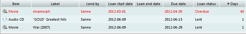

Loan Administration
Menu path: Administration > Loan Administraion

The loan information gives an overview of currently lend items. You can search for specific loans
using the filter fields:
- Loan Type select the type of loans you want to include in the overview. You have the option to only include current loans, historical loan or both.
- Lend by select the specific contact person to get an overview of the items borrowed by him or her.
- Item select the the types of items you want to filter on (software, movies, etc).
- Late returns only only include overdue items.
- Due date between x and y select the date range for the due date. You can leave either field, or both, blank
- Start date between x and y select the date range for the start date. You can leave either field, or both, blank
The overview shows the loans. You can double click on any of them to return an item or to look at the details.
(more about this). Right-click on any of the loans to either edit or review the
item:

The following information is shown per loan:

- Item what kind of item are we looking at (software, audio CD, etc).
- Label description of the item.
- Lend By who is borrowing the item.
- Start date the date of the start of the loan.
- End date the return date.
- Due Date when should the item be returned? Displayed in red in case overdue.
- Loan status the status of the loan such as overdue, lent and available
- # Days number of days in relation to the current loan status